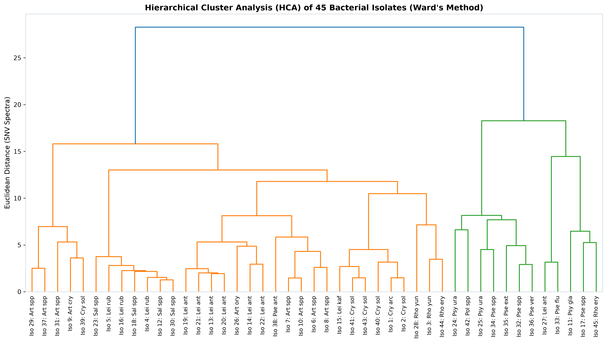
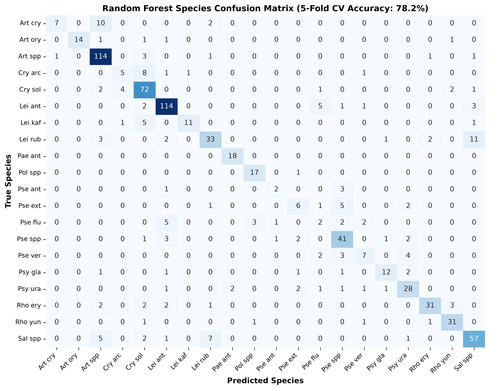
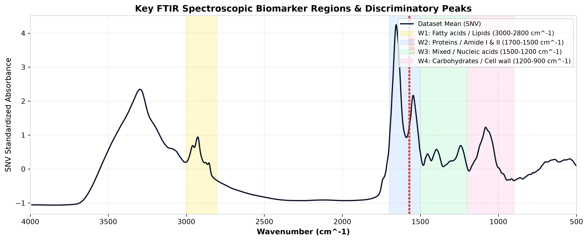

Dataset Overview
FTIR spectral analysis of 45 bacterial isolates cultured at 18°C on BHI medium
Bacterial Taxa Distribution
Spectra count per species across 9 bacterial genera
Key Spectroscopic Regions
Biological functional group infrared absorption bands
Fatty Acids & Lipids
C-H asymmetric & symmetric stretching (CH₂, CH₃) of phospholipid cell membranes.
Proteins / Amide I & II
Amide I (1650 cm⁻¹) C=O stretching & Amide II (1540 cm⁻¹) N-H bending of peptide backbones.
Mixed / Nucleic Acids
PO₂⁻ asymmetric stretching in phosphodiesters, carboxylic acids, and CH₂ bending.
Carbohydrates & Cell Wall
C-O-C & C-O stretching of peptidoglycan, teichoic acids, and lipopolysaccharides.
PCA Score Plot (PC1 vs PC2)
Unsupervised separation of bacterial spectra in 2D principal component space
PCA Spectral Loadings
Wavenumber contributions to Principal Components 1 & 2
Hierarchical Cluster Analysis (HCA) & Isolate Tree
Dendrogram of 45 bacterial isolates computed using Ward's Linkage on mean SNV spectra

Supervised Classification Models
Stratified 5-Fold Cross-Validation Accuracy across 20 species

Discriminatory Spectral Peaks
Top wavenumber biomarkers identified by Random Forest feature importance

Export Cleaned Datasets & Chemometric Outputs
All processed files are generated in CSV and JSON formats ready for Python, R, or ML workflows
ftir_raw_data.csv
Cleaned raw dataset (795 rows × 1,820 columns with full isolate & replicate metadata).
Download Raw CSVftir_snv_preprocessed.csv
Standard Normal Variate (SNV) standardized spectra ready for multivariate modeling.
Download SNV CSVftir_pca_scores.csv
Principal Component scores (PC1 - PC5) for each spectrum with isolate metadata.
Download PCA CSVftir_web_data.json
Structured JSON containing wavenumber grid, isolate mean spectra, and PCA loadings.
Download Web JSON